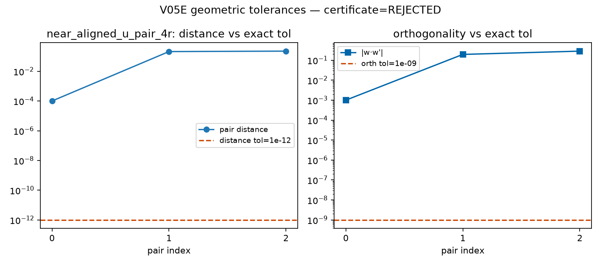
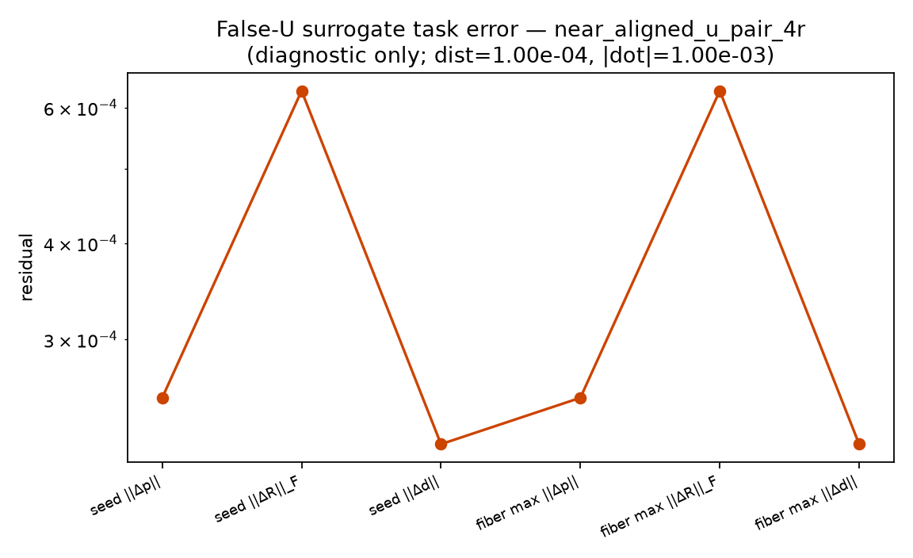
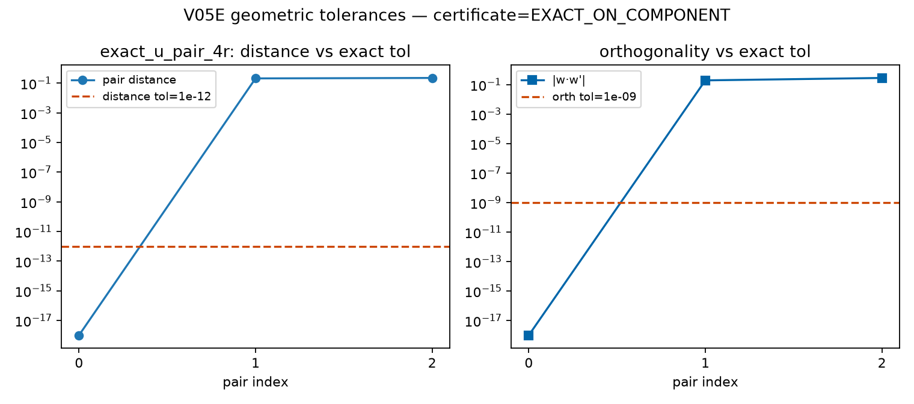
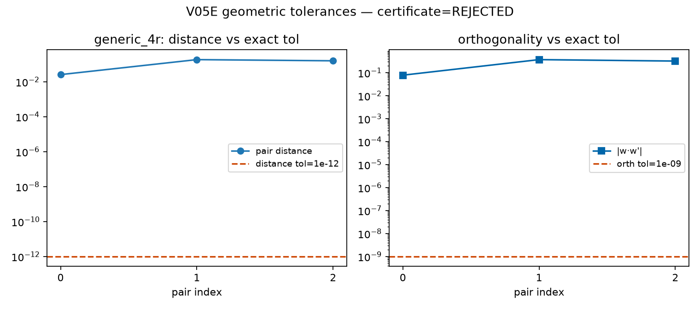

Near-aligned consecutive RR pairs must be rejected as exact U_phys aggregation.
Declared exact geometric tolerances:
distance ≤ 1e-12,
|w·w'| ≤ 1e-09,
||w×w'|| ≥ 1e-08.
near_aligned_u_pair_4r yields DecompositionCertificate status
REJECTED. A forced exact-U surrogate quantifies source-versus-surrogate
FK / fiber task error as diagnostic evidence only
(false_u_surrogate), not an APPROXIMATE certificate.
exact_u_pair_4r remains the V05D control that still certifies.
| Architecture | Certificate | Closure / geometry residuals | False-U max ||Δp|| |
|---|---|---|---|
near_aligned_u_pair_4r | REJECTED | {'best_pair_distance_m': 0.0001, 'best_pair_orthogonality_abs_dot': 0.0009999998333333417, 'best_pair_parallelism_residual': 0.9999995000000417} | 2.521e-04 |
exact_u_pair_4r | EXACT_ON_COMPONENT | {'position_residual_m': 0.0, 'rotation_frobenius': 0.0, 'pointing_residual': 0.0, 'joint_map_residual': 0.0} | — |
generic_4r | REJECTED | {'best_pair_distance_m': 0.02549509756796393, 'best_pair_orthogonality_abs_dot': 0.07820618870057751, 'best_pair_parallelism_residual': 0.9969372056699106} | — |



